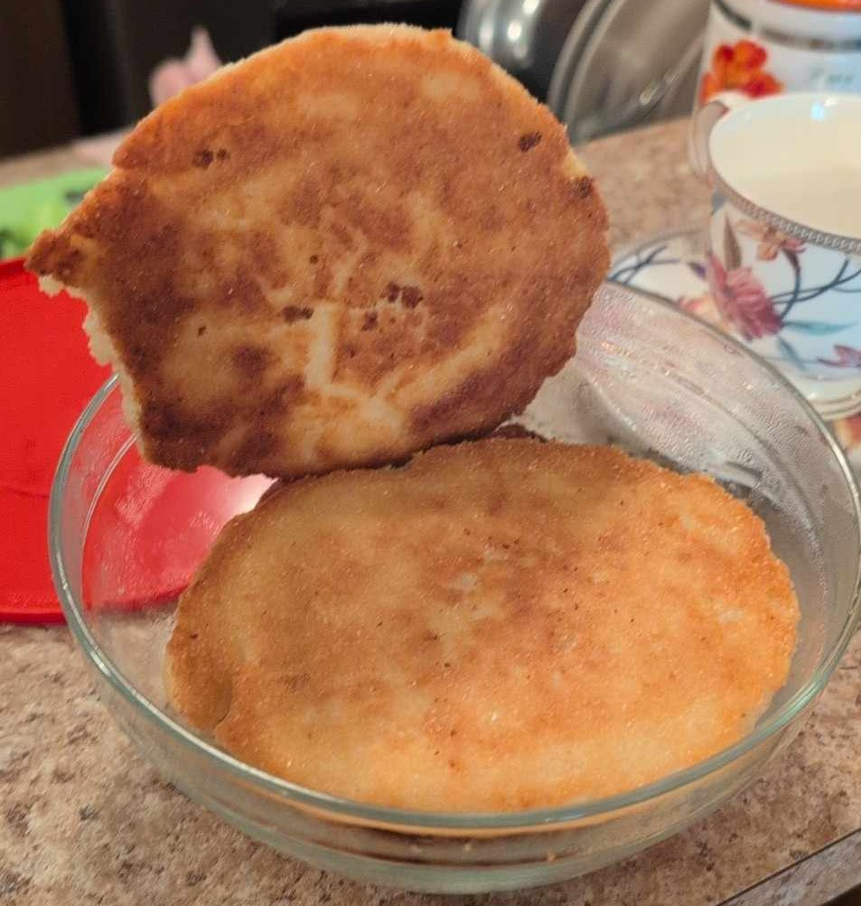

Home
Chvishtari

Description
Chvishtaris are a simple yet delicious Georgian dish made with cornmeal and cheese. They are traditionally served for breakfast and made with Sulguni cheese,
but work just as well with mozarella cheese. In addition to being tasty, these crispy golden brown cheesy patties are quite filling.
Enjoy!
Ingredients
- 1 cup corn flour
- 1 cup grated cheese
- 1 egg
- ½ cup sunflower oil
- Water
Cooking Steps
- Sift 1 cup of flour.
- Grate 1 cup of cheese.
- Add the flour and cheese in a large bowl.
- Add the egg to the flour and cheese mixture.
- Mix the ingredients, adding water as needed until the dough sticks together.
- Heat a pan on medium heat.
- Cover the pan with sunflower oil.
- Make flat discs with the dough and throw them on the pan.
- Once golden brown, turn the patties on the other side.
- Serve hot!